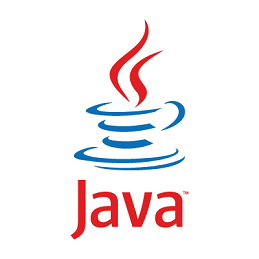
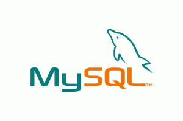
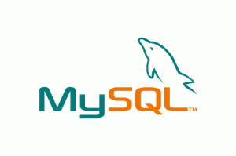

## About
I am currently employed as a Business Technology Rotational Associate at Pfizer. I am working as a software engineer for my first rotation.
I am always looking for career opportunities, so feel free to contact me. A copy of my resume is also available here which includes more detail of my work experience (last updated 12/28/16). My GitHub repositories and sample work of projects I do for fun or for learning can be found here.
### Skills



 

...and more!